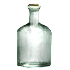

Бутыль из толстого стекла
Предметы / Сырьё
Открыть в интерактивной вики →
| Вес | 3 |
|---|---|
| Цена | 70 |
Описание
Стоимость
Где найти
- Пещеры под Топями — путь: Аларил → Распутье → Руины башни → Пещеры под Башнями → Пещеры под Топями
Применение
Способы получения
|